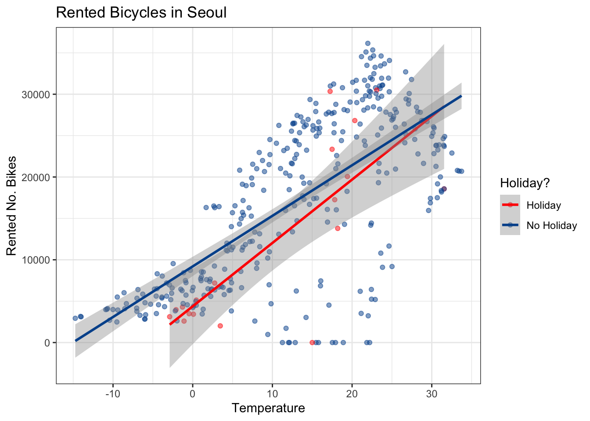

library(tidyverse)
library(tidymodels)
library(viridis)Regression + Inference
STA 101
Bulletin
- Draft final project report due Friday December 2
- This Friday is last lab before peer-review in two weeks
Today
By the end of today you will…
- understand regression hypothesis testing
- interpret p-values in a regression framework
Getting started
Download this application exercise by pasting the code below into your console
download.file("https://sta101-fa22.netlify.app/static/appex/ae22.qmd",
destfile = "ae22.qmd")Load packages
Load data
Seoul_Bikes = read_csv("https://sta101.github.io/static/appex/data/Seoul_Bikes.csv")
Seoul_Calendar = read_csv("https://sta101.github.io/static/appex/data/Seoul_Calendar.csv")
bikes = left_join(Seoul_Bikes, Seoul_Calendar)This data set was originally analyzed in two studies1 of predicting bike-rental usage in Seoul, South Korea. For this lecture, the data was sourced from UCI Machine Learning Repository.
Code book:
Date: the daterented_bikes: total number of bikes rented on a given daytemp_c: mean daily temperature (Celsius)humidity_pct: mean daily humiditywind_speed: mean daily windspeedsnowfall_cm: mean daily snowfall (in cm)season: the seasonholiday: whether or not the day is a holiday
glimpse(bikes)Rows: 365
Columns: 8
$ Date <chr> "1/1/18", "1/10/18", "1/11/18", "1/12/17", "1/2/18", "1/3…
$ rented_bikes <dbl> 4290, 27909, 22964, 9539, 5377, 5132, 17388, 26820, 31928…
$ temp_c <dbl> -1.2833333, 15.4375000, 8.3458333, -2.4541667, -3.8666667…
$ humidity_pct <dbl> 39.33333, 54.25000, 54.16667, 45.87500, 44.00000, 64.2083…
$ wind_speed <dbl> 1.4541667, 2.8250000, 1.2708333, 1.5375000, 1.6083333, 3.…
$ snowfall_cm <dbl> 0.0000000, 0.0000000, 0.0000000, 0.0000000, 0.9041667, 0.…
$ season <chr> "Winter", "Autumn", "Autumn", "Winter", "Winter", "Spring…
$ holiday <chr> "Holiday", "No Holiday", "No Holiday", "No Holiday", "No …Notes
Hypothesis testing in a regression framework
bikes %>%
ggplot(aes(x = temp_c, y = rented_bikes, color = holiday)) +
geom_point(alpha = 0.5) +
theme_bw() +
labs(x = "Temperature", y = "Rented No. Bikes", color = "Holiday?",
title = "Rented Bicycles in Seoul") +
scale_color_manual(values = c("red", "#00539B")) +
geom_smooth(method = 'lm')`geom_smooth()` using formula = 'y ~ x'
Exercise 1
Write the full model equation to match the figure above to predict the number of bikes rented on a given day based on the temperature outside and whether or not the day is a holiday.
\[ \text{Your equation here} \]
Exercise 2
Fit the model above and examine the tidied output. What are the p-values associated with each predictor?
# code hereThe p-value output is associated with a typical hypothesis test… but what’s the null and alternative?
The main idea is that if a predictor (e.g. holiday) does not help us explain bike rental numbers then its associated \(\beta\) might as well be 0. Within the framework of hypothesis testing:
\(H_0\): \(\beta_{\text{holiday}} = 0\)
\(H_A:\) \(\beta_{\text{holiday}} \neq 0\)
For OLS regression, our test statistic is
\[ T = \frac{\hat{\beta} - 0}{\text{SE}_{\hat{\beta}}} \sim t_{n - 4} \] We want to see if our observed statistic, \(T\), falls far in the tail under the null.
R takes care of much of this behind the scenes with the tidy output and reports a p-value for each \(\beta\) by default.
Exercise 3
Calculate the p-value associated with \(\beta_{holiday}\) manually using the equation above. Note: in a regression setting, the degrees of freedom is the number of observations minus the number of \(\beta\)s.
Compare the p-value to one reported in the tidy output.
# code hereIs \(\beta_{\text{holiday}}\) significant at the \(\alpha = 0.05\) level? State your conclusion.
Looking at the tidied output, are any of the \(\beta\)s not significant at the \(\alpha = 0.05\) level?
Change the model from an interaction effects to a main effects model. What do you notice?
Footnotes
Sathishkumar V E, Jangwoo Park, and Yongyun Cho. ‘Using data mining techniques for bike sharing demand prediction in metropolitan city.’ Computer Communications, Vol.153, pp.353-366, March, 2020; Sathishkumar V E and Yongyun Cho. ‘A rule-based model for Seoul Bike sharing demand prediction using weather data’ European Journal of Remote Sensing, pp. 1-18, Feb, 2020↩︎